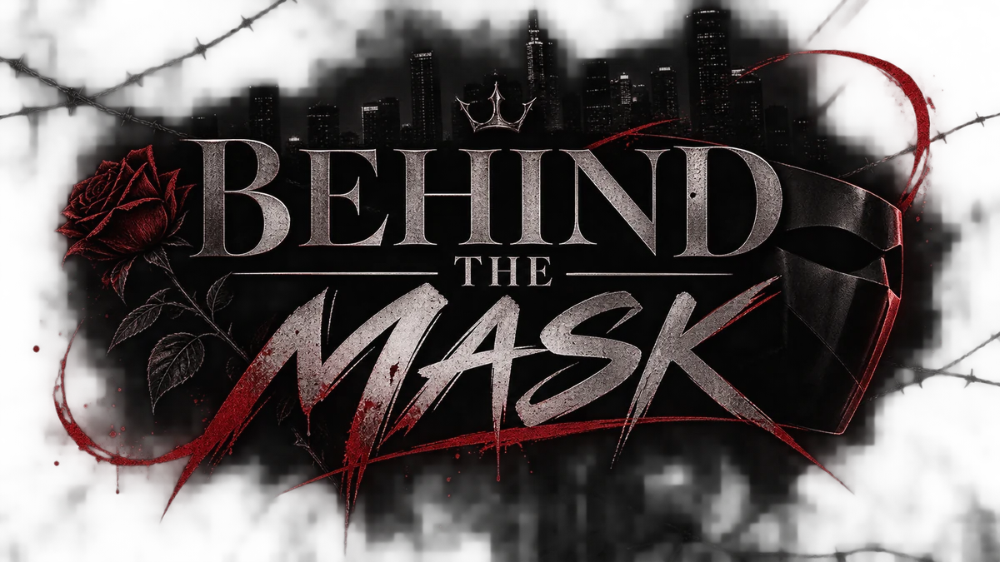

Behind the Mask
A Dark Romance Visual Novel
Overview
A modern city where underground organizations, illegal street races, private fighting clubs, and criminal networks operate behind the public's eyes.
Plot
The protagonist accidentally becomes involved in a criminal organization after witnessing something she was never supposed to see.
One night, she attends an underground motorcycle street race with a friend. The event is hosted by a famous biker influencer known for his masked identity.
Everything seems normal until a violent incident takes place.
Someone gets murdered.
The protagonist accidentally records something on her phone: a masked man handing over a mysterious black case to another person.
Before she can understand what she's witnessed, someone starts hunting her down.
Soon, she discovers that six men are connected to the incident, each holding a different piece of the truth.
Some want to protect her.
Some want to use her.
And some might be responsible for everything.
The biggest question: Can she trust any of them?